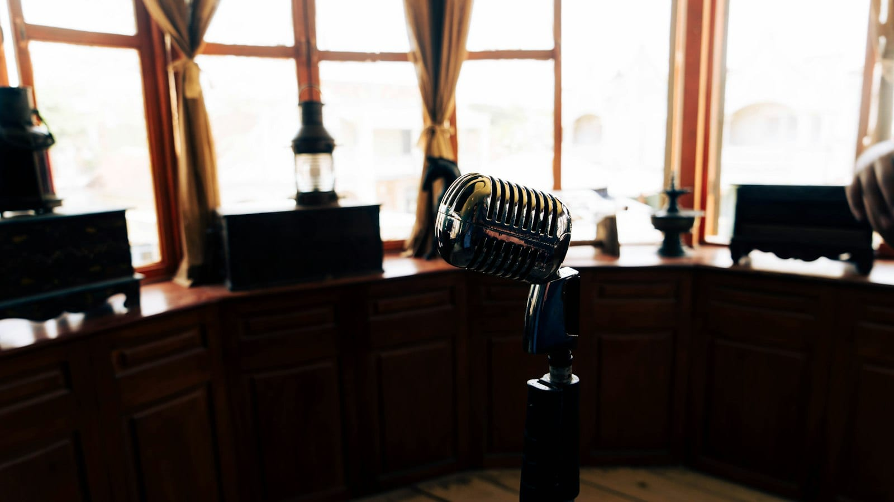

PLANNING
Why guests can't hear the toast
The speeches are the part of the night nobody gets to redo. Here's what goes wrong with a microphone in the hands of a nervous person, in plain words, and the three questions to ask before the night.

- A toast gets lost three ways: the microphone held at the chest, the person drifting toward a loudspeaker, and the dinner music left up under the voice.
- A voice needs to be about twice as loud as whatever is playing underneath it to be understood without effort. Older guests need a little more.
- Ask who has a hand on the volume during the speeches, whether a second microphone is switched on, and whether someone will test the microphone from the spot where the toasts happen.
Four minutes nobody gets to redo #
The father of the bride stands up with a microphone in front of two hundred people, and the first sound in the ballroom is a squeal from the speakers. He flinches, steps back, starts again at half the voice, and the tables along the window catch every third word.
Nobody remembers what the band played at 9:40. Everybody remembers the toast they couldn't hear. The same goes for the CEO's thank-you at the holiday party and the founder's remarks at the client dinner. A wedding has maybe four minutes that cannot be redone, and all four happen on a handheld microphone in the hands of someone who has never held one.
Fixing it takes three questions. Here is what goes wrong, so the questions make sense.
The three things that go wrong #
The first is the microphone held too low. A nervous person holds it at their chest, the way they'd hold a drink, and the microphone picks up about half as much voice as it would at the chin. Everyone at the back leans in.
The second is the squeal. A microphone picks up whatever is in front of it, and that includes the speakers it is being played through. If the person giving the toast walks toward a speaker, the microphone hears itself, the speaker plays that back, the microphone hears it again, and in a fraction of a second the whole loop turns into a shriek. Sound people call it feedback. It happens when the microphone and the speakers are pointed at each other, and it is the band's job to arrange the speakers so that a nervous person can wander and nothing happens.
The third is music left up under the voice. The band's dinner level feels soft when nobody is talking into a microphone. Put a voice on top of it and the back half of the hall hears music with somebody talking somewhere inside it.

How loud a voice has to be #
Loudness is measured in decibels. The only thing worth remembering is that a ten-decibel jump sounds about twice as loud to a person in the seat. A voice on a microphone needs to sit about ten to fifteen decibels above whatever is playing underneath it to be understood without effort. That is roughly twice as loud as the background. A normal voice across a dinner table is about 60 decibels. If the band is also at 60, the microphone has to bring that voice up to 70 or 75, about where a raised voice lands. Guests over sixty need a few decibels more than that, even with ordinary hearing, which is why the grandparents' table is the first to give up on a speech.
The obvious fix is to turn the microphone up, and that is what causes the squeal. The better fix is to bring the music all the way down for the length of the speech, so the voice has nothing to climb over.
The twenty minutes before guests arrive #
Every space rings at a few particular notes, the way a wine glass rings at one. Before the doors open, the band's sound person turns the microphone up until it starts to squeal, finds the note that is squealing, turns that one note down, and does it again. Think of the bass and treble knobs in a car, with a lot more knobs. Twenty minutes of that is what makes a handheld microphone safe in the hands of someone who has never used one.
The microphone also gets tested from the spot where the toasts will actually be given, by someone standing where the speaker will stand. A microphone tested at the band's corner and then carried to the head table is a different microphone.
Who hands it over #
The last piece is a person. Somebody from the band walks the microphone to the speaker and says one sentence: hold it here, right at your chin. Then they go back to the mixing board, the desk with all the knobs, and keep a hand on the volume for the whole speech, nudging it up when the voice drops and down when it rises. A second microphone is switched on and within reach, because batteries die and cables fail at exactly this moment.
The announcement that the shuttle leaves at eleven gets the same treatment. Miss it and the night ends with sixty guests on a curb.
How we handle it #
For every toast and every announcement there is a hand on the volume, the music comes all the way down, and the microphone has been tested from the spot where the words will be spoken. The person giving the toast gets the microphone from a human being with one sentence of instruction. A second microphone is on. The planner agrees all of that with us before the date, so nobody is negotiating it at the head table while the best man waits.
Sources
- Sato, H., Morimoto, M., and Ota, R. (2011). Acceptable range of speech level in noisy sound fields for young adults and elderly persons. Journal of the Acoustical Society of America, 130(3). PDF
- Shojaei, E., et al. (2016). Effect of signal to noise ratio on the speech perception ability of older adults. Medical Journal of the Islamic Republic of Iran, 30. PMC